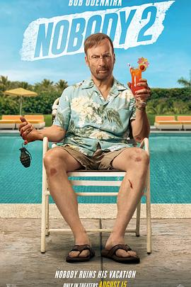

6.2
小人物2
Nobody 2
2025
美国
评分 6.2
导演:
提莫·塔哈亚托
演员:
鲍勃·奥登科克 / 康妮·尼尔森 / 莎朗·斯通 / 科林·汉克斯 / 克里斯托弗·洛伊德 / 约翰·奥提兹 / 丹尼尔·伯哈特
类型:
动作,喜剧,犯罪
剧情简介
退休杀手哈奇·曼塞尔（鲍勃·奥登科克 饰）终于迎来了他梦寐以求的平静假期。阳光、海滩、家庭，这一切看似宁静而惬意，直到一群全副武装的雇佣兵闯进他的度假别墅。面对突如其来的危机，哈奇那份埋藏多年的杀意再次苏醒。影片开场几乎无对白，只有沉稳的呼吸与海浪拍岸声，当第一声枪响打破宁静，观众便知道这不是一次普通的“度假”。导演提莫·塔哈亚托延续了系列的暴力美学与黑色幽默，用更疯狂的节奏构建出一场“退休父亲版战地假期”。哈奇在厨房、泳池、游艇上接连上演“工具即武器”的高能场面：用冰钳夺枪、用救生圈勒敌、用香槟瓶引爆手雷。动作编排干脆利落，剪辑节奏如同爵士鼓点，既凌厉又带着一丝荒诞的喜感。影片一边展现“老派硬汉”的回归，一边讽刺现代世界的虚假安全感。莎朗·斯通饰演的神秘寡妇在暗中操控整个事件，而康妮·尼尔森则让哈奇在家庭与暴力之间的挣扎更具情感张力。克里斯托弗·洛伊德饰演的老父亲继续贡献爆笑时刻——他依然端着霰弹枪，一边发火一边说：“养老院太安静，儿子。”《小人物2》的核心不在复仇，而在“重拾自我”的荒谬哲学。哈奇想要逃离过去，却发现暴力早已融入他的本能。影片用笑声和鲜血讲述中年人的困境：被剥夺激情的生活，最终只能靠战斗来重新定义。结尾处，他带着家人驾车驶离被炸成废墟的海岸，嘴角微微上扬——那不是满足，而是一种被命运再次召唤的倔强。《小人物2》既是对前作的致敬，也是一场更放肆的动作狂欢。它像一首粗粝的摇滚曲，节奏简单、情绪直接，却充满生命力。